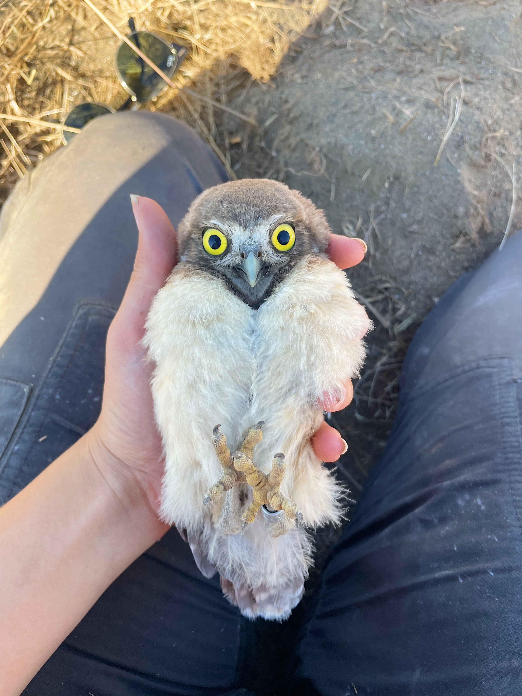

Current Research · 2024–present
Assessing the drivers and limitations to Burrowing Owl reproduction & survival
Burrowing Owl populations across the American West have been in steep decline in recent decades, largely attributed to habitat degradation and climate change. Burrowing Owls are a charismatic and recognizable grassland species that serve as a flagship species for grassland conservation, one of the most threatened ecosystems in the world. An increasingly common method to support population recovery of these owls is the use of artificial burrows, which double as a means for detailed data collection on nest success and owl survival.
My research aims to identify the limitations and drivers of population recovery as it relates to these primary threats; specifically, to understand how changing grassland landscapes and environmental conditions impact the nest success and adult survival of a recovering population of Burrowing Owls nesting in artificial burrows at a former chemical weapons depot using a long-term dataset. These findings will help to inform wildlife and land management decisions for the benefit of Burrowing Owls and to support the recovery of this charismatic grassland species.